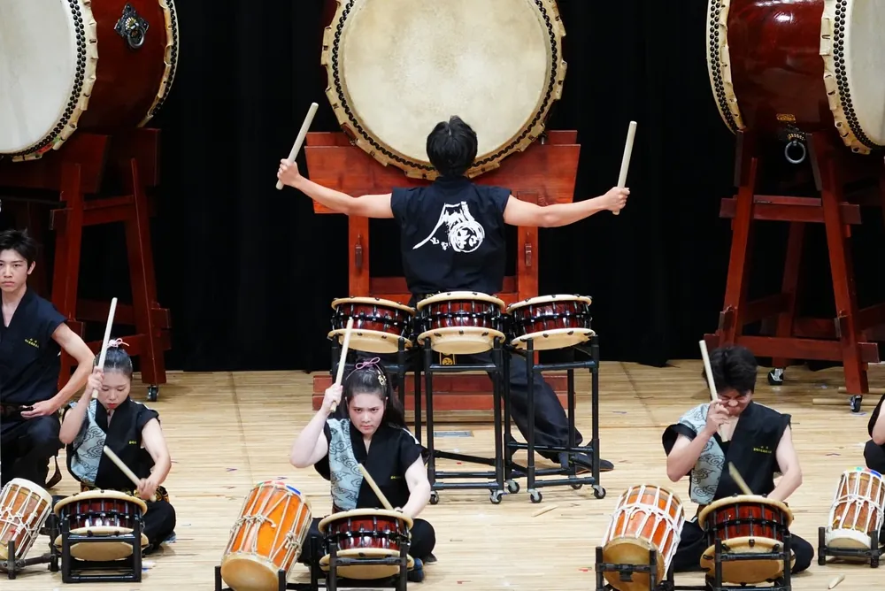
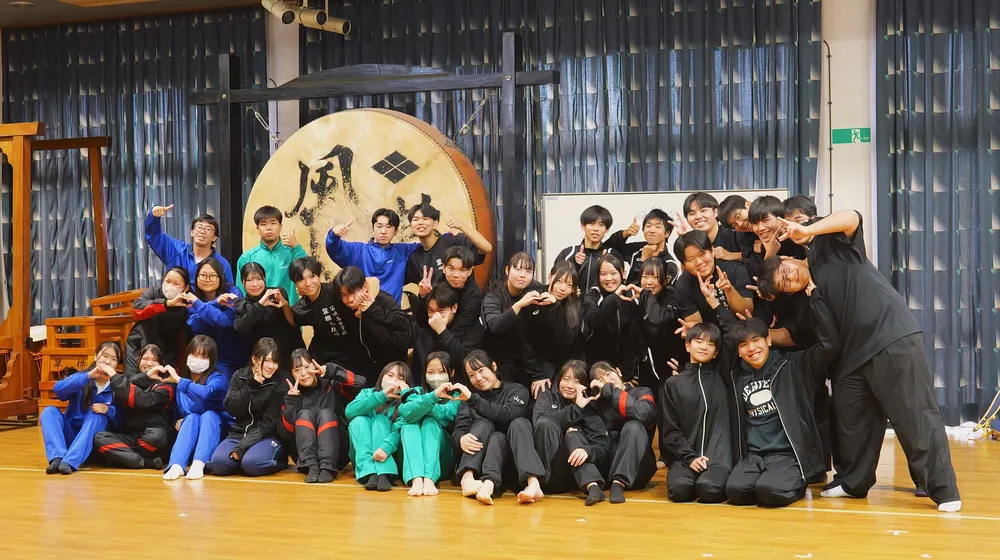
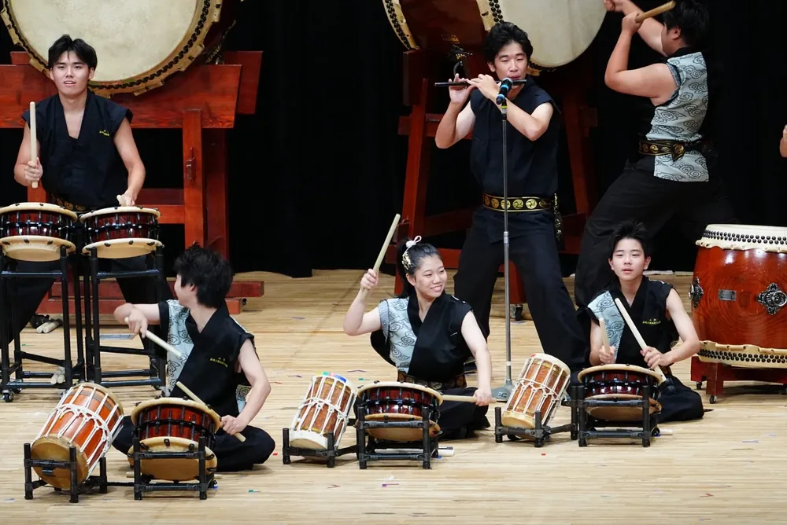

天野流和太鼓の音色を受け継ぐ
韮崎工業高校太鼓部が演奏する和太鼓は、甲府市無形文化財であった故・天野宣先生に由来する「天野流和太鼓」です。現在は天野宣音楽事務所の専門的な指導を仰ぎながら、礼儀作法から撥（バチ）の握り方、身体の使い方、そして一音に込める心のあり方を学んでいます。
太鼓部のモットーは、本校の校訓でもある「窮理居敬（きゅうりきょけい）の精神」。真理を究め、常に身を慎み敬意を払うという精神のもと、仲間とともに呼吸を合わせ、重厚かつ繊細なアンサンブルを追求しています。
韮崎工業高校太鼓部が演奏する和太鼓は、甲府市無形文化財であった故・天野宣先生に由来する「天野流和太鼓」です。現在は天野宣音楽事務所の専門的な指導を仰ぎながら、礼儀作法から撥（バチ）の握り方、身体の使い方、そして一音に込める心のあり方を学んでいます。
太鼓部のモットーは、本校の校訓でもある「窮理居敬（きゅうりきょけい）の精神」。真理を究め、常に身を慎み敬意を払うという精神のもと、仲間とともに呼吸を合わせ、重厚かつ繊細なアンサンブルを追求しています。

大太鼓に向き合う部員の背中（関東大会写真より）

他校との合同練習会でバチを手に鍛錬を重ねる様子
太鼓部は、2001（平成13）年1月23日、当時校長であった横森巧先生と初代太鼓部顧問の渡邊博先生のご尽力により、同好会としてスタートを切りました。
同年3月16日には、本校同窓会より多大なご支援をいただき「太鼓贈呈式及び入魂の儀」が執り行われ、本格的な部活動としての第一歩を踏み出しました。
創部から26年目を迎えた現在も、代々の先輩たちが築き上げた伝統を守りながら、関東大会での銅賞受賞など全国にその名を轟かせる活動を続けています。
毎年冬、太鼓部は1年間の活動の集大成として定期演奏会「鍛麗 -TANREI-」を開催しています。会場となる東京エレクトロン韮崎文化ホールには、保護者や卒業生、地域住民など多くの方々が足を運びます。
演奏会では、伝統演目である「士魂迅雷」「士魂風轍」「六情鍛麗の譜」「男一匹若獅子太鼓『気迫』」「風林火山」など、多彩で力強い楽曲が次々と披露されます。
また、定期演奏会のみならず、年間20件近くにのぼる地域の祭りやイベントへの出演依頼を受け、地域文化の活性化に貢献しています。

舞台上で熱のこもった演奏を披露する部員たち
学校公式発表および公開資料に基づく活動データです。